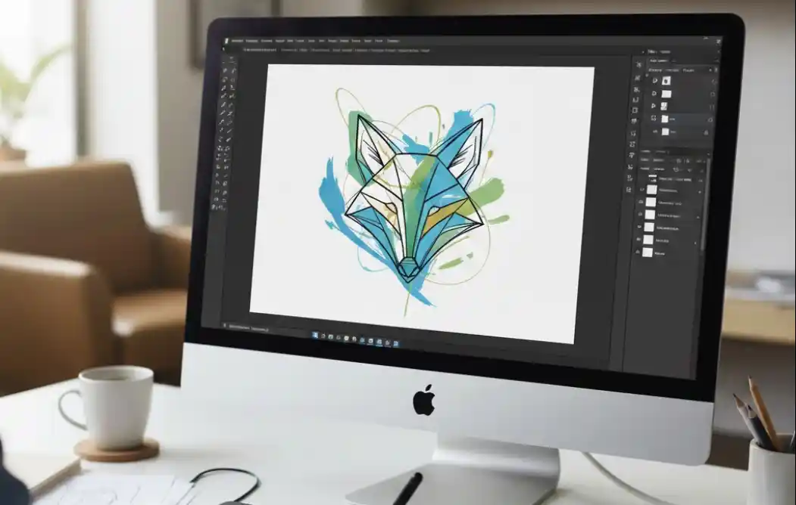
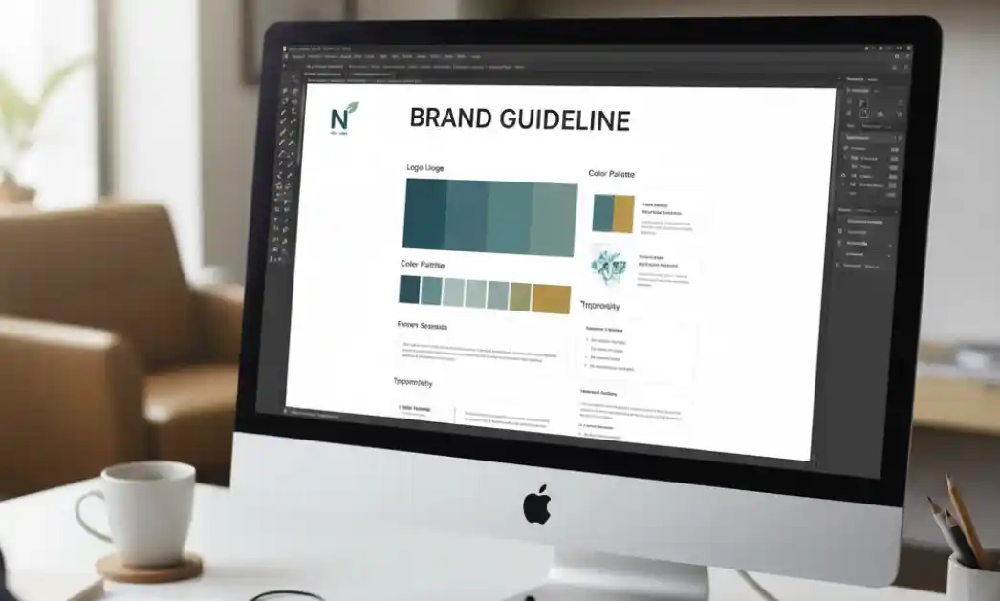
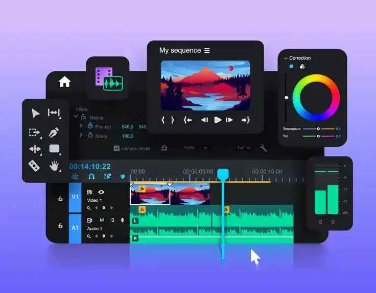

Service Details
Description
Providing comprehensive design solutions to elevate your business identity. We focus on close collaboration to deliver practical and professional results that enhance your brand's credibility in the long run.
Logo&brand guideline
Our vision is to empower brands with a unique visual identity that blends timeless elegance with modern functionality.
- Discovery & Strategy
- Concept Development
- Final Delivery & Guidelines
Essence Analysis: We begin by defining the core identity and "personality" of your brand to ensure every design choice has a strategic purpose.
Foundation: This phase ensures that the visual direction aligns perfectly with your business goals and target audience.

Ideation & Sketching: Our creative journey starts with deep brainstorming and hand-drawn sketches to explore unique possibilities.
Digital Crafting: We select the strongest concepts to bring into professional software, meticulously designing each element according to your brand's core values.
Three-Draft System: We provide three distinct design directions (3 Drafts), giving you a variety of professional options to choose from.

Visual System: We select typography and color palettes that reflect the true character of your brand.
Comprehensive Manual: To ensure consistency, we provide a detailed Brand Guideline including Logo Usage, Do’s & Don’ts, Clear Space, and more.
Ready-to-Use Assets: You receive a complete set of high-quality files, ready for both professional printing and digital use.

3D Visualization & Digital Craftsmanship
Our vision is to bridge the gap between imagination and reality. We specialize in transforming concepts into high-fidelity 3D models with meticulous attention to texture, lighting, and structural accuracy, ensuring your products are presented in the most impactful way possible.
- Analysis & Blueprinting
- Modeling & Texturing
- Lighting & Final Rendering

Understanding the Goal: We begin by carefully studying your sketches or 2D designs to understand every key detail and proportion.
Strategic Planning: This phase helps us plan the 3D structure accurately, ensuring the final result matches your original vision as closely as possible.

Bringing Shapes to Life: We transform your flat ideas into a complete 3D geometry, focusing on creating a clean and well-proportioned model.
Adding Realism:We apply colors and materials—such as plastic, metal, or paper—to give the model depth and a realistic feel that reflects your actual product.

Creating Atmosphere: We set up virtual lighting to highlight the best features of the model, giving it a professional and appealing look.
High-Quality Delivery:The final step is rendering high-resolution images that are ready for your presentations or basic marketing materials.
Multimedia&Video production
We believe that a great video is about simple storytelling that truly connects with the audience. We are here to help you edit and organize your footage into an engaging story, focusing on bringing out your brand's personality to ensure your message reaches and resonates with your target audience effectively.
- Storyboarding & Preparation
- Storyboarding & Preparation
- Sound Design & Final Polish

Planning the Flow: We start by discussing the main message and organizing the footage to ensure the story flows naturally.
Aligning with Brand: This step ensures the video’s tone and style match your brand’s personality, such as the energy seen in the Sgt. Tik or Cape Gooseberry projects.

Crafting the Edit: We carefully cut and assemble the video, focusing on smooth transitions and a pace that keeps the audience engaged.
Visual Enhancements:Adding simple motion graphics, titles, and effects to highlight key information and make the video look more professional.

Audio Integration: Selecting the right background music and balancing audio levels to create a complete and immersive experience.
Final Delivery:Providing high-quality video files optimized for your social media platforms or presentations.
AI-Powered Creative Solutions
Leveraging cutting-edge AI tools to optimize design workflows, enhance image quality, and generate innovative visual assets with high efficiency.
- Workflow Optimization
- Visual Quality Enhancement
- Innovative Asset Generation
Speed & Consistency: AI allows us to maintain high-quality standards across every deliverable, even in large-scale projects that require a fast turnaround time.
Tailored Creativity: While we leverage AI tools, we maintain full creative control to ensure every output is unique and perfectly aligned with your brand’s personality and values.
.webp)
Digital Marketing Materials
Elevate your digital marketing with strategically designed visuals. We create content that not only looks professional but also consistently reflects your brand identity across all platforms to maximize recognition and trust.
- Brand-Centric Design Strategy
- Multi-Platform Content Creation
- Quality Assurance & Delivery
.webp)
Identity Alignment:We ensure every piece of marketing material—from social media posts to digital banners—strictly follows your brand guidelines to maintain a professional look.
Visual Storytelling: Creating designs that don't just look good but effectively communicate your message and call-to-action to your target audience.
.webp)
Platform Optimization:Tailoring designs to fit specific requirements for various platforms like Facebook, Instagram, or TikTok for the best visual performance.
Engagement-Focused Layouts:Using design principles that grab attention and encourage user interaction, helping to increase your brand's digital presence.
.webp)
Precision & Consistency:Rigorous checks to ensure all elements, colors, and fonts are consistent across all marketing assets before final delivery.
Ready-to-Post Assets:Delivering high-quality files in the correct formats and sizes, ready for immediate use in your digital marketing campaigns.
.webp)
Crisis & Corporate Presentation
Elevate complex information into clear and credible presentations. We design professional decks focused on clear data structure and powerful storytelling, helping you communicate with confidence and effectiveness during critical corporate meetings or high-stakes situations.
- Data Structure & Storylining
- Professional Visual Design
- Final Polish & Technical Ready
.webp)
Multi-Format Delivery: We analyze your raw content and prioritize key information to ensure the presentation flows logically and is easy to digest.
Meticulous Review: Crafting a compelling storyline that captures your audience's attention while staying focused on your primary presentation goals.
.webp)
Information Design: Designing slides that seamlessly match your corporate image—including colors, fonts, and overall tone—to build maximum credibility.
Corporate Identity Alignment:Transforming complex data and numbers into clean, intuitive infographics or diagrams that make your message stand out.
.webp)
Strategic Flow: Conducting a thorough quality check on every slide, ensuring that design consistency and layouts are perfect across the entire deck.
Multi-Format Delivery:Delivering your files in ready-to-use formats like PowerPoint, Keynote, or PDF, along with basic guidance on how to use them effectively.